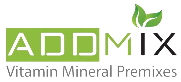

<!doctype html>
<html lang="en">
<head>
	<meta charset="utf-8">
	<meta name="description" content="Fitness HTML Template">
	<meta name="author" content="CodeGlamour">
	<meta http-equiv="X-UA-Compatible" content="IE=edge">
	<meta name="viewport" content="width=device-width, initial-scale=1, shrink-to-fit=no">
	<title>Addmix - Proudacts Page</title>
	<!--Favicon-->
    <link rel="shortcut icon" href="images/Main_Icon-removebg-preview.png" type="image/x-icon">
	<link rel="icon" href="images/Main_Icon-removebg-preview.png" type="image/x-icon">
   	<!-- Google font (font-family: 'Montserrat', sans-serif;) -->
	<link href="https://fonts.googleapis.com/css?family=Montserrat:400,500,600,700" rel="stylesheet">
	<!-- Google font (font-family: 'Open Sans', sans-serif;) -->
	<link href="https://fonts.googleapis.com/css?family=Open+Sans:300i,400,400i,600,700" rel="stylesheet">
    <!-- Bootstrap Css-->
    <link rel="stylesheet" type="text/css" href="css/bootstrap.css">
    <!-- Icons Css-->
    <link rel="stylesheet" type="text/css" href="css/themify-icons.css">
    <!-- Font Awesome Css-->
    <link rel="stylesheet" type="text/css" href="css/fontawesome-all.min.css">
    <!-- OWL Carousel Css-->
    <link rel="stylesheet" type="text/css" href="css/owl.carousel.min.css">
    <!-- Slick Css -->
    <link rel="stylesheet" type="text/css" href="css/slick.css">
    <!-- Magnific Popup Css -->
    <link rel="stylesheet" type="text/css" href="css/magnific-popup.css">
    <!-- Custom Css -->
	<link rel="stylesheet" type="text/css" href="css/style.css">
    <!-- Paradise Slider Main Style Sheet -->
    <link href="css/full_width_animated_layers_002.css" rel="stylesheet" media="all">
</head>
<body>
	<!-- Preloader -->
	<div id="preloader">
	  <div class="ozient-folding-cube">
		  <div class="ozient-cube1 ozient-cube"></div>
		  <div class="ozient-cube2 ozient-cube"></div>
		  <div class="ozient-cube4 ozient-cube"></div>
		  <div class="ozient-cube3 ozient-cube"></div>
		</div>
	</div>
			<!-- *****Main Wrapper***** -->
		<div id="home" class="main-wrapper">
		<!-- SUB NAVBAR -->
		<div class="top_navbar d-none d-lg-block">
			<nav class="navbar">
		        <div class="container">
		          <span class="color-yellow d-none d-lg-block fa fa-map-marker"> <a class="text-white" href="https://goo.gl/maps/UQmrLiXRV9YUuZrK9">&nbsp;Plot no. 253 6th extension of Industrial Zone - 6th of October - Giza, Egypt.</a></span> 
		&emsp;&emsp; <span class="color-yellow d-none d-lg-block"><a class="text-white" href="https://wa.me/+201272373336"><i class="fas fa-mobile-alt"></i>&nbsp; 01272373336</a></span>
		              <span class="color-yellow d-none d-lg-block fa fa-clock ml-auto"><a class="text-white" href="">&nbsp;&nbsp;Sat-Thu, 8.00 To 6.00 Friday CLOSED</a></span>
		          </div>
		    </nav>
		</div>

		<!-- Main header -->
		<header class="main-header">
			<div class="main_navbar">	
			<!-- MAIN NAVBAR -->
						<nav class="navbar navbar-expand-lg navbar-dark">
					<div class="container">
					  <a class="navbar-brand logo-sticky" href="index.html"></a>
					  <button class="navbar-toggler" data-toggle="collapse" data-target="#navbarNav"><span class="navbar-toggler-icon"></span></button>
						<div class="collapse navbar-collapse" id="navbarNav">
						  	<ul class="navbar-nav mr-auto">
							 	<li class="nav-item dropdown">
									<a href="index.html" class="nav-link">Home</a>
								</li>
								<li class="nav-item dropdown">
									<a href="about.html"  class="nav-link">About Us</a>
								</li>
								<li class="nav-item dropdown">
									<a href="products.html" class="nav-link">Products</a>
								</li>
								<li class="nav-item dropdown">
									<a href="#" class="nav-link dropdown-toggle" data-toggle="dropdown">Related news</a>
									<div class="dropdown-menu">
										<a href="articles.html" class="dropdown-item">Articles</a>
										<a href="certifications.html" class="dropdown-item">Our Certifications</a>
									  </div>
								</li>
								<li class="nav-item dropdown">
									<a href="#" class="nav-link dropdown-toggle" data-toggle="dropdown">Talking to Nutrition</a>
									<div class="dropdown-menu">
										<a href="contact_2.html" class="dropdown-item">Contact Us</a>
									  </div>
								</li>
						  	</ul>
						  <!-- Arabic Page -->
						  	<ul class="navbar-nav ml-auto">
								   <li class="nav-item mt-4 mb-4">
									  <a class="link-outline" href="indexA.html"><i class="icon fas fa-language"></i>&nbsp; عربي</a>
								  </li>
							</ul>
						</div>
					  </div>
				</nav>
		    </div>
		</header>

			<div class="page_banner">
			<div class="overl"></div>
				<div class="container">
					<div class="row">
						<div class="col-lg-12 col-md-6 col-sm-12 pt-5">
							<div class="section-heading">
								<h1 class="display-4 text-white">Products</h1>
							</div>
							<div class="section-inline">
								<ul class="list-inline">
									<li class="list-inline-item">
									  <a class="home text-white" href="index.html">Home</a>
								  </li>
								  <li class="list-inline-item">
									<i class="home text-white fa fa-angle-double-right"></i>
								  </li>
								  <li class="list-inline-item">
									<p class="home text-white">Products</p>
								  </li>
								</ul>
							</div>
						</div>
					</div>
				</div>
			</div>

			<!-- *****Services section***** -->
			<section id="services">
				<div class="container">

					<div class="row no-gutters">
						<div class="services_info">
							<h2>
								Our products
							</h2>
							<p style="font-size: 18px;">
								 Well-balanced and nutritious feed is a primary prerequisite for growing animals. 
								Protect the quality of ingredients and feed through innovative products and 
								techniques. Support and promote health and performance of the animals. Discover 
								our complete portfolio and services to help your business and solve your problems
							</p>
						</div>
						<div class="col-lg-9">
							<div class="services_info">
								<h1 class="section-heading">Premix for Broiler</h1>
								<p> provides the necessary nutrients needed for improved productivity, growth and 
									performance and formulated for use in farms where growth promotion is 
									important. They are designed to provide extra vitamins and minerals that 
									lightweight animals need to develop strong bones and grow quickly.
								</p>
								<p>
									Broiler Premix is a balanced blend of stabilized and high potency vitamins, 
									minerals and trace elements for high energy feed for broiler. It contains Vitamin 
									D3 adequately, which regulates Calcium absorption and in turn prevents rickets in 
									growing birds. It ensures a good immune system and reduces mortality
								</p>
							</div>
						</div>
						<div class="col-lg-3">
							<div class="services_img">
								
							</div>
						</div>
					</div>

					<div class="row no-gutters mt-1 ">
						<div class="col-lg-3">
							<div class="services_img">
								
							</div>
						</div>
						<div class="col-lg-9 order-first order-lg-2">
							<div class="services_info">
								<h1 class="section-heading">Premix for Layer</h1>
								<p> is a concentrated protein, vitamin and mineral mix that is formulated to be mixed 
									with on farm grains to provide a nutritionally balanced diet for laying hens. This 
									premix can also be used to make laying diets for other poultry such as turkeys, 
									ducks and game birds.
								</p>
								<p>
									Natural yolk pigments are used to enhance egg yolk color.
								</p>
								<p>
									Non-protein concentrates for layer chickens containing vitamins, trace mineral 
									elements (layer premix), amino acids (methionine, lysine), sources of calcium, 
									phosphorus, digestive enzymes (quantum blue and econase), also antitoxins, antiClostridium, anti-salmonella, sodium chloride, sodium bicarbonate and Natural Betaine..
								</p>
								<p>
									The importance of layer megamix
								</p>
								<p>
									Used at an inclusion rate of 25 kg/ton of feed
								</p>
								<p>
									--Improve digestion and absorption <br>
									--Improve gut health and safety <br>
									--Protect the liver from fat and maintain the integrity of the liver <br>
									--Improve bone health and safety <br>
									--Increase egg production <br>
									--Improve the quality of the egg shell <br>
									--Getting rid of the negative effects of phytate and fiber in feed <br>
									--Get rid of mycotoxin problems <br>
									--Reduce feed cost
								</p>
								<p>
									Used at an inclusion rate of 25 kg/ton of feed
								</p>
							</div>
						</div>
					</div>

					<div class="row no-gutters mt-1">
						<div class="col-lg-9">
							<div class="services_info">
								<h1 class="section-heading">Premix for Breeder</h1>
								<p>
									Vitamin and trace mineral nutrition is important for breeder performance and the 
									performance of the progeny. In contrast to the energy and protein composition of 
									the egg, as the vitamin and mineral content is dependent on the maternal diet and 
									deficiencies, excesses and imbalances may affect hatchability, chick viability and 
									broiler growth 
									to ensure proper mixing of vitamins and minerals premixes it should be mixed at 
									minimum 3kg/1ton.
								</p>
								<p>
									Non-protein concentrates for breeders containing vitamins, trace mineral elements 
									(layer premix), amino acids (methionine, lysine), sources of calcium, phosphorus, 
									digestive enzymes (quantum blue and econase), also antitoxins, anti- Clostridium, 
									anti-salmonella, sodium chloride, sodium bicarbonate and Natural Betaine.

								</p>
								<p>
									Packaging: 30kg, 3kg and 6kg
								</p>
								<p>
									Cobb - Ross - IR - Arbor acres – hyline
								</p>
								<p>
									The importance of Breeder Megamix <br> 
									-- Improve digestion and absorption <br> 
									-- Improving gut health and safety <br> 
									-- Improve the quality of Egg shell <br> 
									-- Increased fertility and hatching <br> 
									-- Increased number of chicks fit for sale <br> 
									-- Prevention of Salmonella and e-coli <br> 
									-- Increase herd immunity to increase immunization efficiency and increase <br> 
									-- illiteracy immunity <br> 
									-- Increased homogeneity of herds <br> 
									-- Improve the health and safety of bones <br> 
									-- Get rid of mycotoxin problems <br> 
									-- Eliminate the negative effects of fodder fillings and fibres <br> 
									-- Improve mattress quality and reduce foot problems <br> 
									-- Reduce the cost of feed
								</p>
							</div>
						</div>
						<div class="col-lg-3">
							<div class="services_img">
								
							</div>
						</div>
					</div>

					<div class="row no-gutters mt-1">
						<div class="col-lg-3">
							<div class="services_img">
								
							</div>
						</div>
						<div class="col-lg-9 order-first order-lg-2">
							<div class="services_info">
								<h1 class="section-heading">Premix for fattening</h1>
								<p>
									premixes cattle is characterized by well-balanced vitamins and minerals 
									which satisfy all needs of this category of beef cattle at this stage.
								</p>
								<p>Packaging: 30kg, 3kg and 6kg</p>
								<p>
									Advantages:<br>
									-- Maximal utilization of nutrients from meals, with quick growth and attainment of high final body mass.<br>
									-- Excellent health status of beef cattle.<br>
									-- Good physical condition and body conformation
								</p>
							</div>
						</div>
					</div>

					<div class="row no-gutters mt-1">
						<div class="col-lg-9">
							<div class="services_info">
								<h1 class="section-heading">Premix for Aquaculture</h1>
								<p>
									Vitamin and minerals premixes play a major role in the increase growth and 
									survival, immunity, disease resistance, with the increased production in 
									aquaculture stocking density and various functions of the aquatic organisms. also 
									Vitamins and Minerals premixes play a pivotal role to establish minimum requirement and maximum tolerance for an 
									element to secure optimal health and growth of living organisms.
								</p>
								<p>
									Aquaculture Product Specifications<br>
									-- act as cofactors in catalysts, enzyme activators and in metabolism.<br>
									-- important components of skeletal structures such as bones and teeth. and soft 
										tissues of the animal body consist of minerals<br>
									-- when added to feed play an important role in the transmission of nerve impulses 
										and muscle contraction.
									-- play a vital role in the maintenance of pH of the blood and other body fluids <br>
									-- play a key role in the homoeostasis and thus regulate the exchange of water and 
									solutes within the animal body.
								</p>
							</div>
						</div>
						<div class="col-lg-3">
							<div class="services_img">
								
							</div>
						</div>
					</div>

					<div class="row no-gutters mt-1">
						<div class="col-lg-3">
							<div class="services_img">
								
							</div>
						</div>
						<div class="col-lg-9 order-first order-lg-2">
							<div class="services_info">
								<h1 class="section-heading mb-1">Dairy Cattle</h1>
								<p style="line-height: 24px;">
									Nutrition starts with complete, personalized rations for cows and heifers. Our 
									variety of dairy cattle vitamin premixes allows industry professionals to provide 
									animals with feed that has the potential to positively affect cow performance and 
									add value to a producer’s bottom line.
								</p>
								<p>
									Our standard dairy cattle vitamins and minerals premix offerings contain highly fortified
								</p>
								<p>
									What can a addmix dairy cattle vitamin premix provide? <br>
									addmix premixes provide nutritionally recommended levels of vitamins and trace 
									minerals put together by our team of experienced nutritionists and industry experts
									addmix premixes allow options for multiple stages of production
									addmix premixes are supported by our technical team for on-farm questions and 
									feed formulating needs
								</p>
								<p>Packaging: 30kg, 3kg and 6kg</p>
							</div>
						</div>
					</div>

					<div class="row no-gutters mt-1">
						<div class="col-lg-12">
							<div class="services_info">
								<h1 class="section-heading">Premix for Megamix</h1>
								<p>
									Is our concentrated bag and all products are custom-made according to your 
									wishes, and contain all necessary proteins, amino acids, minerals, vitamins, 
									digestive enzymes and additives for optimal results.
								</p>
								<p>
									Enzymes are included for improved feed conversion, digestion and the reduction of wet droppings.
								</p>
								<p>
									Used at an inclusion rate of 25 kg/ton of feed
								</p>
								<p>
									The importance of Broiler megamix <br>
									--Improve feed consumption <br>
									--Improve digestion and absorption <br>
									--Improve intestinal health and safety <br>
									--Eliminate the negative effects of phytate and fiber in feed <br>
									--Gain weight and improve conversion factor <br>
									--Best digestibility of phosphorus and other nutrients <br>
									--Increase the proportion of brisket <br>
									--Reduce the cost of feed
								</p>
							</div>
						</div>
					</div>
				</div>
			</section>
		
		    <!-- ***** Footer section start ***** -->
		    <footer class="footer">
		    	<div class="container">
		    		<div class="row">
		    			<div class="col-md-4 pr-30">
		    				<div class="footer_about">
		    					<h3>about us</h3>
		    					<div class="line-title-left"></div>
		    					<p class="text-white">Addmix factory is part of the Egyptian Arab Group for Veterinary Services (EGAVET), a leading company in serving all products related to animal, poultry and fish production in Egypt by providing the latest services in the field of biosecurity.</p>
		    				</div>
		    				<div class="footer_subscribe">
		    					<h5>subcribe now</h5>
								<div class="input-group">
						            <input type="text" class="form-control" placeholder="Enter your email here">
						            <span class="input-group-btn">
						                <button type="submit"><i class="fa fa-paper-plane"></i></button>
						            </span>
						        </div>
		    				</div>
		    			</div>
		    			<div class="col-md-4">
		    				<div class="latest_posts">
		    					<h3>latest posts</h3>
		    					<div class="line-title-left"></div>
		    					<ul class="post-link">
									<li>
										<a href="minerals.html">If you need a Summary <br>About Minerals</a>
										<br>
										<span>Oct 2, 2023</span>
									</li>
									<li>
										<a href="vitamins.html">If you need a Summary <br>About Vitamins</a>
										<br>
										<span>Sep 28, 2023</span>
									</li>
								</ul>
		    				</div>
		    			</div>
		    			<div class="col-md-4">
		    				<div class="footer_address">
		    					<h3>address</h3>
		    					<div class="line-title-left"></div>
		    					<ul class="address-list">
									<li>
										<p><i class="fas fa-map-marker"></i>Plot no. 253 6th extension of Industrial Zone - 6th of October - Giza, Egypt</p>
									</li>
									<li>
										<p><i class="fas fa-mobile-alt"></i><a href="https://wa.me/+201272373336" id="normall">01272373336</a></p>
									</li>
									<li>
										<p><i class="far fa-envelope"></i>info@addmix-eg.com</p>
									</li>
								</ul>
								<ul class="footer_social list-inline">
									<li class="list-inline-item"><a href="https://www.facebook.com/addmixeg/?ti=as"><i class="fab fa-facebook-f"></i></a></li>
									<li class="list-inline-item"><a href="https://www.facebook.com/addmixeg/?ti=as"><i class="fab fa-twitter"></i></a></li>
									<li class="list-inline-item"><a href="https://mail.google.com/mail/mu/mp/625/#co"><i class="fab fa-google-plus-g"></i></a></li>
									<li class="list-inline-item"><a href="https://www.facebook.com/addmixeg/?ti=as"><i class="fab fa-pinterest-p"></i></a></li>
									<li class="list-inline-item"><a href="https://www.facebook.com/addmixeg/?ti=as"><i class="fab fa-vimeo-v"></i></a></li>
								</ul>
		    				</div>
		    			</div>
		    		</div>
		    	</div>
		    </footer>

			<!-- **** Sub Footer **** -->
		    <div class="sub-footer">
				<div class="container">
					<div class="row">
						<div class="col-md-12">
							<p class="text-center">
								Created By <a href="#">DocCode.</a> All Rights Reserved.
							</p>
						</div>
					</div>
				</div>
			</div>	
			
	</div>
	 <!-- ***** End Main Wrapper ***** -->


	<!-- Jquery-2.2.4 JS -->
    <script src="js/jquery-2.2.4.min.js"></script>
    <!-- login JS -->
    <script src="js/login.js"></script>
    <!-- Bootstrap-4 Beta JS -->
    <script src="js/bootstrap.min.js"></script>
	 <!-- Touch Swipe JS File Version - 1.6.18 -->
    <script src="js/jquery.touchSwipe.min.js"></script>
	  <!-- Paradise Slider Main JS File -->
	  <script src="js/paradise_slider_min.js"></script>
    <!--Jquery Easing Js -->
    <script src="https://cdnjs.cloudflare.com/ajax/libs/jquery-easing/1.4.1/jquery.easing.js"></script>
	<!--Slick Js -->
	<script src="js/slick.min.js"></script>
	<!--Magnific Popup Js -->
	<script src="js/magnific-popup.js"></script>
	<!--OWL Carousel Js -->
	<script src="js/owl-carousel.min.js"></script>	
    <!-- Custom JS -->
    <script src="js/custom.js"></script>
</body>
</html>